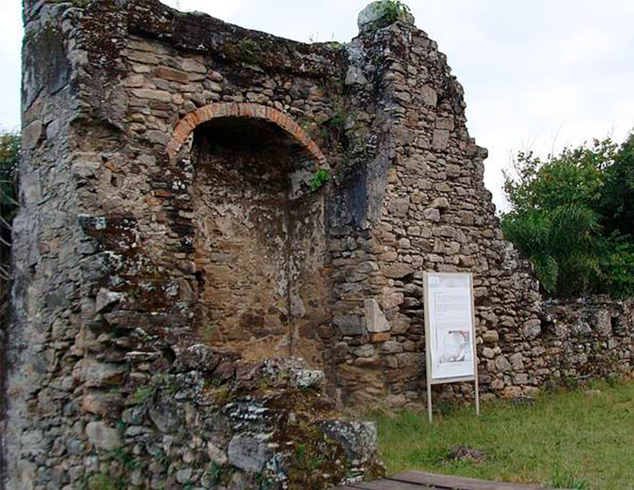
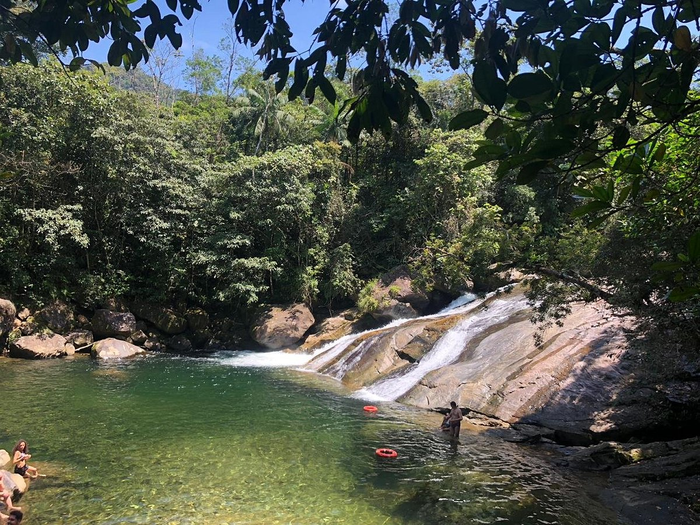
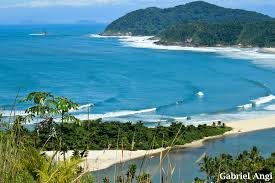

História
Origens Indígenas e Colonização
Antes da chegada dos europeus, a região era habitada pelos índios Tupi-Guaranis. O nome "Peruíbe" vem do tupi e possui interpretações variadas, sendo a mais aceita "no rio dos tubarões" (Iperu-y-be).
Em 1532, com a chegada de Martim Afonso de Sousa em São Vicente, a colonização começou a se expandir pelo litoral sul. No entanto, foi com a chegada dos Padres Jesuítas, como Leonardo Nunes e o Padre José de Anchieta, que a povoação tomou forma. Eles fundaram a Aldeia de São João Batista em 1554, com o objetivo de catequizar os nativos.
Desenvolvimento da cidade
Durante séculos, Peruíbe foi um pequeno povoado dependente de Itanhaém. A economia girava em torno da pesca e da agricultura de subsistência. O grande salto ocorreu no século XX com a chegada da Estrada de Ferro Santos-Juquiá (1914), que facilitou o transporte de carga e passageiros.
Emacipação da cidade
Em 18 de fevereiro de 1959, Peruíbe conquistou sua emancipação política, tornando-se um município independente e passando a investir fortemente no turismo, aproveitando suas belezas naturais e o misticismo que envolve a região.
Pontos Turísticos de Peruíbe
Peruíbe oferece opções para quem busca história, ecoturismo e até ufologia (a cidade é famosa por supostos avistamentos de OVNIs).
Ruínas do Abarebebê: Local de grande valor arqueológico e histórico, tombado pelo CONDEPHAAT.

Cachoeira do Paraíso: Localizada no bairro do Guaraú, possui piscinas naturais e um tobogã de pedra muito popular.

Praia da Barra do Una: Localizada dentro da reserva da Juréia, é um paraíso rústico onde o rio Una se encontra com o mar.

Curiosidades
Lama Negra de Peruíbe: Famosa por suas propriedades terapêuticas e dermatológicas, utilizada em tratamentos de saúde e estética.
Roteiro Ufológico: A cidade possui o primeiro "Portal para Discos Voadores" (um monumento) e é considerada a capital da ufologia no estado.